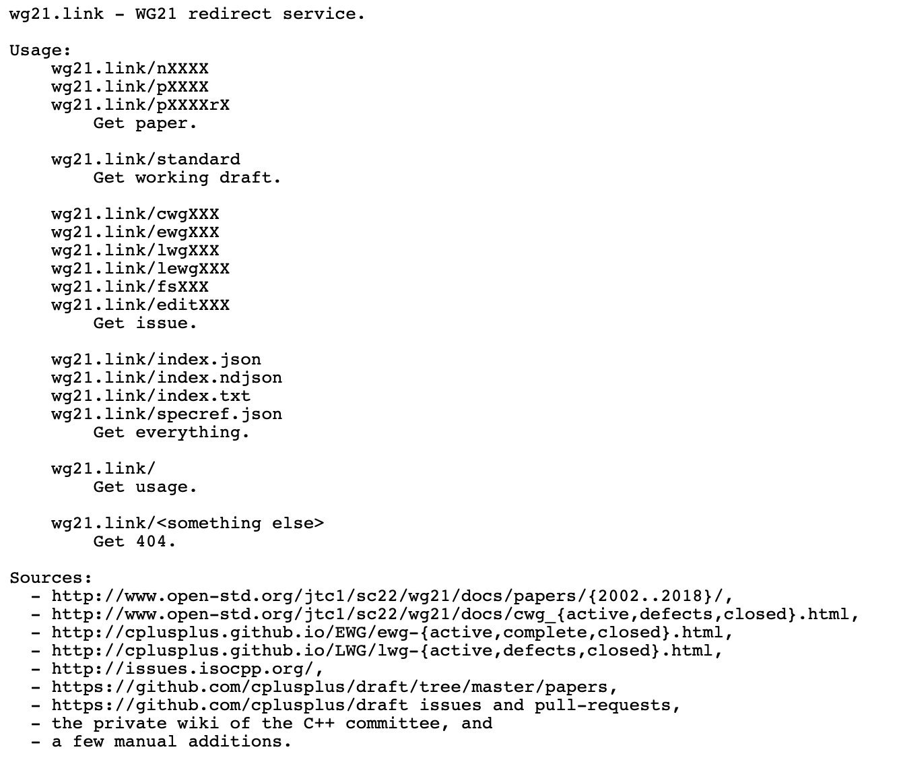

2019-10-17
http://www.open-std.org/jtc1/sc22/wg21/docs/papers/2019/#mailing2019-10
https://www.reddit.com/r/cpp/comments/dhm138/wg21_the_201910_mailing_is_now_available/

A de-facto standard C++ project layout, by Colby Pike <vectorofbool@gmail.com>
https://www.reddit.com/r/cpp/comments/d6k7mt/address_sanitizer_is_coming_to_msvc/
http://blog.llvm.org/2019/09/closing-gap-cross-language-lto-between.html
Reddit descended into an irrelevant but heated discussion on the term "C/C++".
https://stackoverflow.com/questions/5205491/whats-the-difference-between-stl-and-c-standard-library
https://www.reddit.com/r/cpp/comments/c90sxa/whats_the_difference_between_stl_and_c_standard/
STL is a maintainer of MSVC's implementation of the C++ Standard Library.
https://www.scapix.com/introduction/
https://github.com/scapix-com/scapix
https://www.reddit.com/r/cpp/comments/cjvc1u/automatic_c_bindings_for_various_languages/
https://www.reddit.com/r/cpp/comments/ckf44x/scapix_java_link_modern_c17_jni_wrapper_library/
https://quuxplusone.github.io/blog/2019/07/03/announcing-coro-examples/
https://github.com/Quuxplusone/coro
Swish
CPR
https://github.com/martinmoene/span-lite
A C++20-like span for C++98, C++11 and later in a single-file header-only library.
https://brevzin.github.io/c++/2019/08/01/enums-default/
https://www.reddit.com/r/cpp/comments/cubah9/enum_switch_warnings/
GCC & Clang:
https://devblogs.microsoft.com/oldnewthing/20190830-00/?p=102823
https://blog.magnum.graphics/announcements/introducing-python-bindings/
https://github.com/pybind/pybind11
https://www.reddit.com/r/cpp/comments/d0hguz/are_there_any_memory_safety_libraries_for_c/
https://github.com/duneroadrunner/SaferCPlusPlus/
https://github.com/deplinenoise/ig-memtrace
MemTrace is a memory debugging tool developed internally at Insomniac Games.
https://github.com/ivmai/bdwgc
The Boehm-Demers-Weiser conservative C/C++ Garbage Collector (libgc, bdwgc, boehm-gc) https://www.hboehm.info/gc/
Steve Downey: https://www.sdowney.org/2019/07/anyduck-a-value-type-erased-type/
https://cukic.co/2019/02/19/tmp-testing-and-debugging-templates/
https://github.com/berkeley-container-library/bcl
https://www.reddit.com/r/cpp/comments/d9xnce/c_interview_questions/
Sturgeon's Law:
90% of everything is crap.